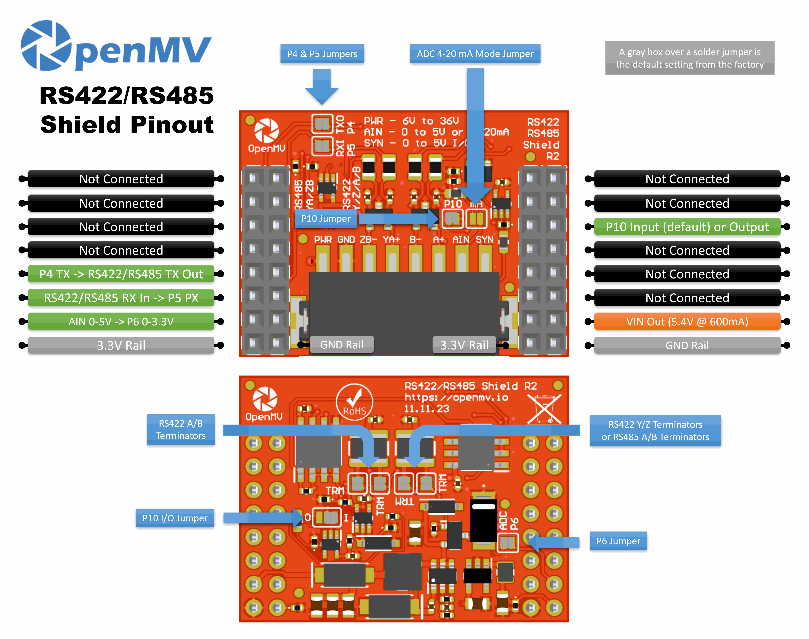

RS422/RS485 Shield¶
RS422/RS485 Shield poskytuje OpenMV Cam diferenciální sériové spojení na velkou vzdálenost vhodné pro průmyslové sběrnice, se širokým napájecím vstupem, přepěťovou ochranou a ADC/digitálním I/O.

Úplný datasheet, fotografie a možnosti objednání najdete na stránce produktu RS422/RS485 Shield.
Hlavní vlastnosti¶
10 Mb/s RS-422 nebo RS-485 s palubním zakončením
Vstup 6–36 V, odolný proti přepólování
ADC vstup 0–5 V s ochranou proti přepětí ±36 V
Digitální I/O 0–5 V pro synchronizační spouštění kamery, s ochranou proti zkratu
Pinout¶
{kind=link}

Přehled pinů¶
Pin |
Funkce |
|---|---|
P4 |
RS-422 / RS-485 TX → budí diferenciální linku ven |
P5 |
RS-422 / RS-485 RX ← přijímá diferenciální linku dovnitř |
P6 |
Úrovňově převedené čtení AIN (0–3,3 V na P6) |
P10 |
SYN — digitální I/O s otevřeným kolektorem na svorkovnici |
PWR in |
Široký vstup 6–36 V na svorkovnici (odolný proti přepólování) |
AIN in |
Analogový vstup na svorkovnici |
VIN out |
5,4 V při proudu až 600 mA z palubního regulátoru |
Napájecí větev 3,3 V |
Napájí palubní elektroniku shieldu |
Větev GND |
Společná zem |
Poznámka
AIN je chráněn proti přepětí až do ±36 V a ve výchozím nastavení je napěťovým vstupem 0–5 V, převedeným dolů na 0–3,3 V na P6. Propojením můstku režimu 4–20 mA na přední straně shieldu přepnete AIN na proudový vstup 4–20 mA.
Poznámka
SYN je digitální linka s otevřeným kolektorem, přitažená na 3,3 V na straně kamery a 5 V na straně svorky SYN. Ve výchozím nastavení je vstupem — shield úrovňově převádí 0–5 V na SYN dolů na 0–3,3 V na P10. Změnou palubní pájecí propojky přepnete P10 na výstup, který úrovňově převádí 0–3,3 V na P10 nahoru na 0–5 V na SYN.
Poznámka
Každý z pinů P4, P5, P6 a P10 je ve výchozím nastavení připojen ke kameře pomocí pájecí propojky — propojku rozpojte na libovolném pinu, který chcete získat zpět pro nesouvisející použití. Propojka P6 je na zadní straně shieldu; P4, P5 a P10 jsou na přední straně.
Poznámka
Palubní zakončovací rezistory jsou ve výchozím nastavení připojeny — rozpojte odpovídající pájecí propojky na zadní straně, abyste je odpojili. Dvě pokrývají pár RS-422 A/B a dvě pokrývají pár RS-422 Y/Z (který slouží zároveň jako zakončení RS-485 A/B), celkem čtyři propojky.
O RS-422 a RS-485
Oba standardy posílají sériová data jako symetrický (diferenciální) signál po kroucených párech kvůli dálkovým spojům odolným proti rušení:
RS-422 je plně duplexní po čtyřech vodičích. Budič vysílá na vyhrazeném TX páru označeném Y/Z a protějšek vysílá zpět na samostatném RX páru označeném A/B. Jeden vysílač a až deset přijímačů na pár.
RS-485 je obvykle poloduplexní po dvou vodičích. Vysílání a příjem sdílejí jediný pár, v terminologii RS-485 nazývaný A/B, ale fyzicky tytéž linky Y/Z na tomto shieldu. Sběrnici může sdílet až třicet dva uzlů a kterýkoli z nich ji může budit.
Jak shield podporuje oba standardy
Shield nese dva transceivery THVD1426, z nichž každý zvládá kterýkoli standard:
První transceiver budí pár Y/Z (který slouží zároveň jako pár RS-485 A/B). Je jediný se zapojeným budičem, takže veškerý odchozí provoz z kamery jde tímto párem bez ohledu na režim.
Druhý transceiver budí pár A/B. Jeho budič je odpojen — tento transceiver je pouze přijímací a uplatní se jen v režimu RS-422 se čtyřmi vodiči.
Přijímače obou transceiverů jsou vždy aktivní a jejich RX výstupy jsou logicky vynásobeny (AND) do jediné přijímací linky zpět ke kameře:
V režimu RS-485 se dvěma vodiči je aktivní pouze první transceiver. Zapojte sběrnici na Y/Z; strana A/B je nečinná a hradlo AND jen propustí RX prvního transceiveru.
V režimu RS-422 se čtyřmi vodiči protějšek vysílá kameře na páru A/B (zachyceno druhým transceiverem), zatímco kamera vysílá na Y/Z (přičemž vlastní přijímač prvního transceiveru vrací odchozí data zpět). Hradlo AND je kombinuje — kameru dosáhne kterýkoli pár, na němž se objeví nízký pulz (start bit, data).
Popisky na svorkovnici odrážejí dvojí mapování:
RS-422 (4 vodiče) — TX ven na Y/Z, RX dovnitř na A/B.
RS-485 (2 vodiče) — TX/RX sdílejí pár Y/Z (= A/B v názvosloví RS-485). Svorky A/B na shieldu nechte nezapojené.
Použití¶
Poznámka
Číslo periferie UART(3) níže odpovídá mapování STM32. Na jiném procesoru může být sběrnice zapojená na tyto piny jiná — zkontrolujte referenci své desky.
Komunikace s diferenciálním sériovým protějškem na P4 (TX) / P5 (RX):
from machine import UART
uart = UART(3, baudrate=115200)
uart.write("hello\n")
print(uart.read())
Čtení vstupu AIN ze svorkovnice přes úrovňově převedený pin P6:
from machine import ADC
import time
ain = ADC("P6")
while True:
v = ain.read_u16() * 3.3 / 65535
print("AIN:", v * (5.0 / 3.3), "V")
time.sleep_ms(100)
Reagujte na sestupnou hranu na lince SYN — například pro synchronizaci kamery s jiným zařízením, které stahuje SYN na nízkou úroveň:
from machine import Pin
def on_sync(pin):
print("SYN falling edge")
syn = Pin("P10", Pin.IN)
syn.irq(on_sync, Pin.IRQ_FALLING)